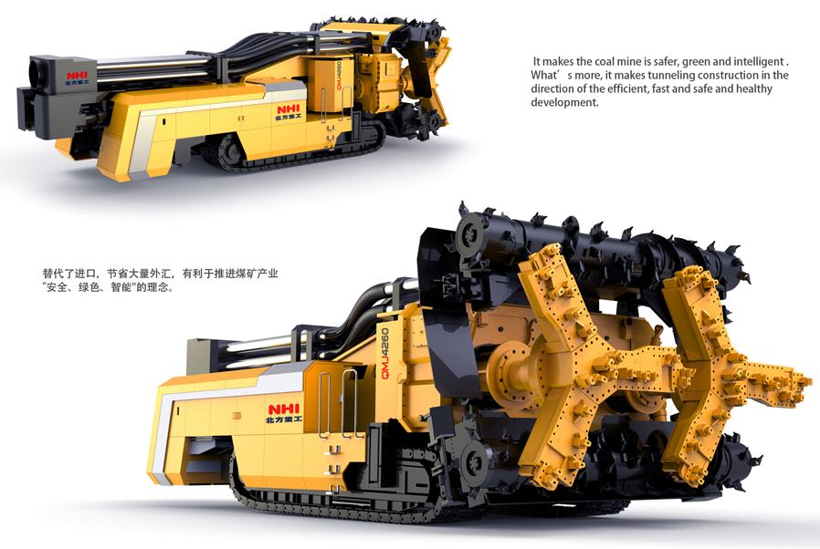
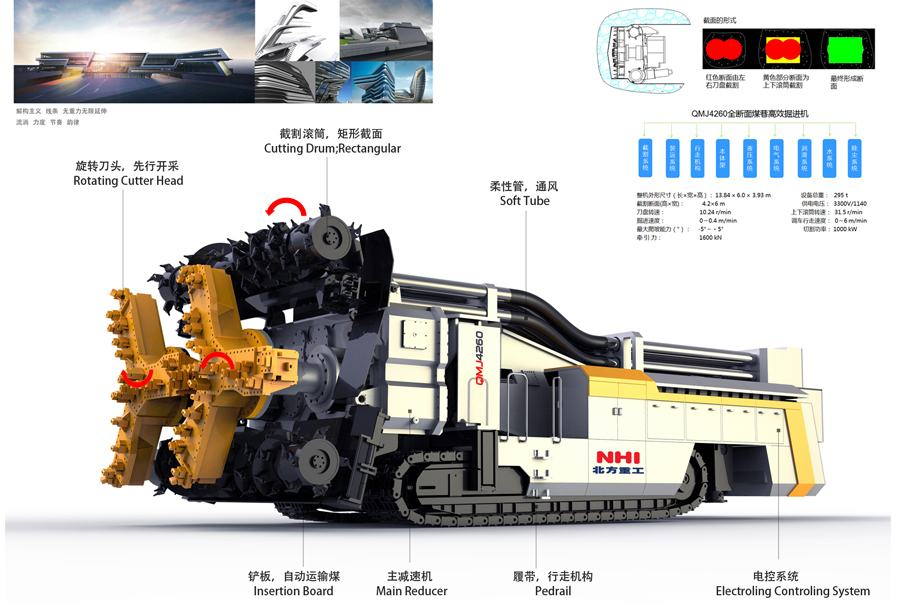

全断面煤巷高效掘进机由截割系统、装运系统、行走机构、本体架、液压系统、电气系统、润滑系统、水系统和除尘系统九大系统。整机参数：外形尺寸（长×宽×高）：13.84 × 6.0 × 3.93 m ；设备总重：295 t；截割断面(高×宽)：4.2×6 m 上下滚筒转速：31.5 r/min；掘进速度：0～0.4 m/min；调车行走速度：0～6 m/min；最大爬坡能力（°）： -5°～﹢5°；牵 引 力1600 kN。整个掘进工作过程： 通过左右两个刀盘和上下滚筒的旋转完成切割，截割系统的转动均由电机驱动，通过履带行走获得向前的推力， 履带是液压马达驱动。切割下的物料由左右刀盘臂向中间剥离，通过下滚筒的螺旋输送，物料被抛到铲板上，通过刮板式运输机将物料输送到后方其他设备。截割系统的调整都是通过液压驱动油缸完成。控制系统分本地控制和遥控控制，正常工作时一般采用遥控控制，检修时可采用本地控制。检修履带等时可通过前后支撑将整机支起，进行相应作业。整个设备向前行走的定向靠陀螺仪导向，操作人员坐在距设备20米外的后方支护完整区域内时时监视电脑屏幕上相应参数，配合遥控器操作，完成相应的工作作业。整机采用陀螺仪导向，提供信息，操作人员通过显示的参数，调整左右履带和下滚筒的卧底量等参数。整机设有自动润滑装置，机器开始动作时和机器连续运行一段时间后，自动润滑装置会自启动，为相应部位润滑。
全断面煤巷高效掘进机与现有掘进设备相比，掘进速度是现有掘进效率的两到三倍，煤矿面临采掘失衡的问题将会得到解决，煤炭产量也可得到大幅提升；井下掘进队伍和工人可以减少一半以上；激光定位及无线遥控技术可减小操作工人的劳动强度，提高巷道的质量，提高操纵的安全性。采用全断面连续截割、巷道一次成型技术,双刀盘加横滚筒的独特设计实现矩形断面一次成型,掘进断面25平方米，掘进速度每分钟0.3米,运输能力突破每小时1500吨.整机设计工艺首创，装配及维修简单方便。设计创意来源于扎哈哈迪德的建筑，流动又富有变化，形成无重力无限延伸的设计表现，与功能进行有机的结合。不锈钢装饰条的运用，打破传统掘进机外观冰冷的固有形象，赋予节奏和韵律新的产品形象。表面处理采用喷塑的形式，制造材料均是可回收重复利用的材料。



全断面煤巷高效掘进机,采掘机械化成套装备
掘进装备
煤矿采掘安全与效率提升
煤矿装备细分市场
煤机装备自主化代表